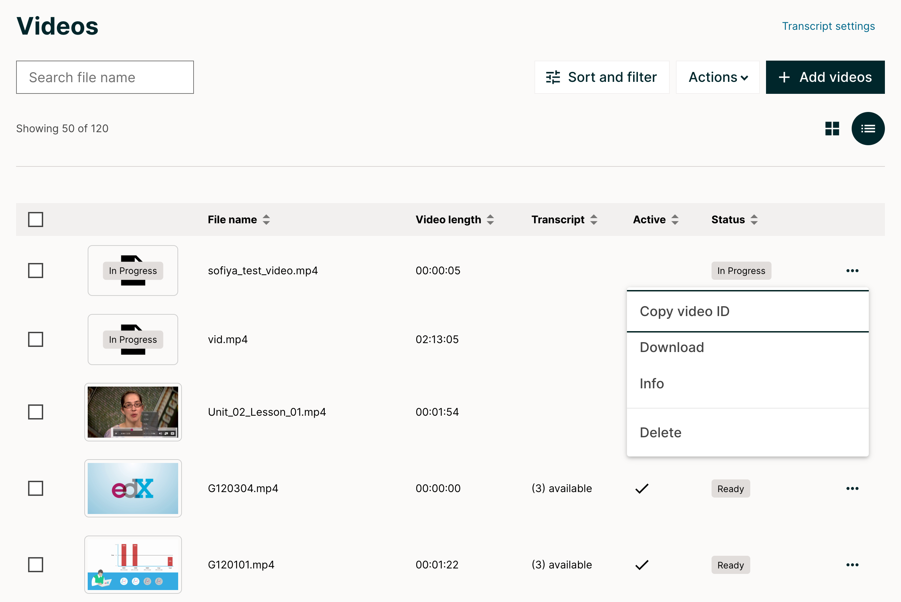
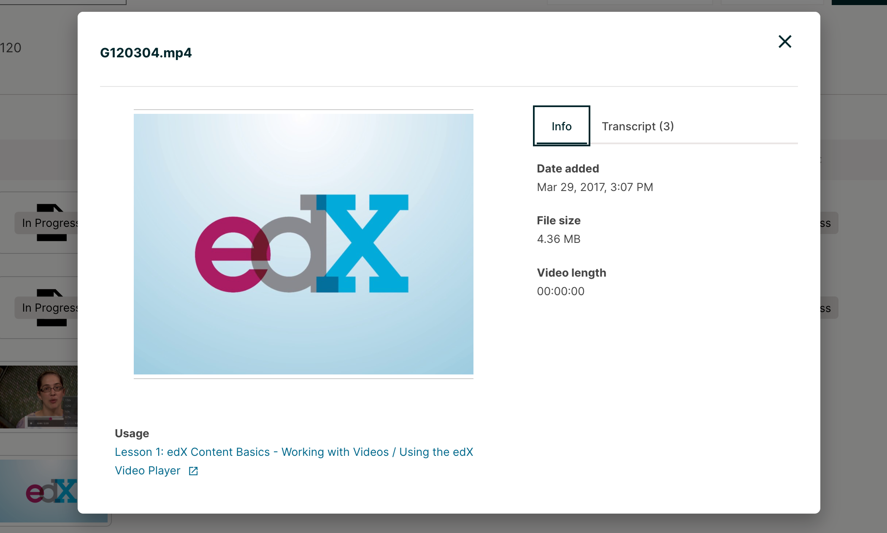
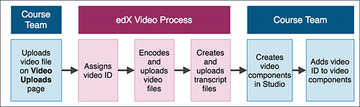
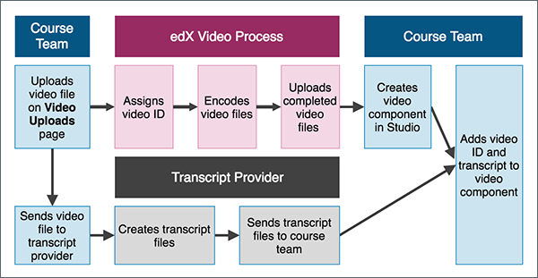
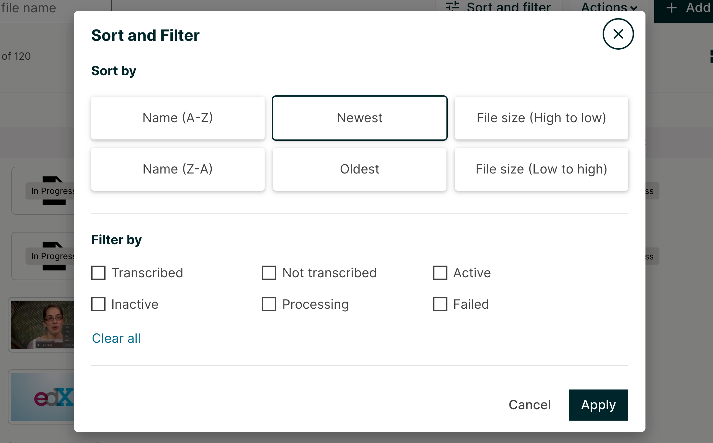

9.3. Managing Course Videos#
Uploading a video and transcript is different depending on whether your course is on edx.org or Edge.
For more information, see the following topics.
9.3.1. Course Videos Page#
You manage videos for your course on the Videos page. This page lists the videos that you have added, along with the following capabilities and information regarding the videos.
{kind=link}
A checkbox for Download and Delete bulk actions
A thumbnail of the file
The video name
The video length
Transcript status
An indication of whether the video is active in the course
An indication of the video status (failed, processing, or blank. The video is ready when that column is blank)
The three dot menu allows you to copy the Video ID, download the video, launch the Info Modal, and delete a video
9.3.1.1. Video Info Modal#
The Info Modal shows the date added, the file size, and the length of the video. The “Usage” section lists all Units where the file is referenced within the course. Clicking on each link will take you to the corresponding Studio Unit page.
{kind=link}
This page also includes a Search option to help you find specific videos. For more information, see Find an Uploaded Video.
9.3.2. Uploading a Video for an edx.org Course#
Note
This information applies only to courses that run on the edx.org site. For information about adding video files to courses that run on Edge, see Uploading a Video for an Edge Course.
When you upload a video, a banner message will appear at the top, alerting you to the upload now in progress. Once the video thumbnail says “uploaded” over it and the banner message at the top has gone away, it is safe to move on to other things. Until that time, please remain on the page until the upload has completed. You can do any other work in studio by opening an additional tab, just make sure you don’t close the first one until the upload is done.
For edx.org courses, you upload your videos to the Videos page. The edX video process then creates multiple formats and sources for your videos.
For more information, see the following topics.
9.3.2.1. Automated Video Process#
So that the edX video player can automatically play videos in the best format for a learner’s device and internet connection, after you upload a video for an edx.org course, an automated video process creates multiple formats and sources for every video. The process also assigns a single video ID to the video that represents all of the formats and hosting locations for the video.
For courses that have integrated transcripts through 3Play Media or cielo24, the edX automated video process also creates transcripts for each video.
For courses that have non-integrated transcripts, you must obtain your transcripts from your third party provider. You later add the video transcripts manually when you create a video component. Transcripts can also be added in the Transcript tab within the Info Modal.
{kind=link}
Note
If a step in the process does not complete successfully, the process automatically tries again multiple times. If the process does not complete successfully after multiple tries, an error status appears in the list of videos on the Videos page as well as within the video component.
For more information, see the following topics:
9.3.3. Automated Video Process for Integrated Transcripts#
If the course has integrated video transcripts through 3Play Media or cielo24, the process has the following steps.
{kind=link}
The course team uploads the video file on the Videos page.
The process assigns a unique video ID to the video. This video ID represents all of the files, hosting locations, and transcripts that the automated process creates.
Important
As soon as the automated video process has assigned a video ID to the video, you can add the video to the course. However, the video is not visible in the course until the automated process is complete. The process can take up to 24 hours.
The process encodes video files in different formats, and then uploads the video files to the hosting service.
The process creates transcripts for the video, and then uploads the transcripts to the hosting service.
After the automated video process is complete, the course team creates a video component and adds the video ID to the video component. For more information, see Adding a Video to a Course.
9.3.4. Automated Video Process for Non-Integrated Transcripts#
If the course uses a transcript provider that does not offer integrated transcripts, the video processing service completes the following steps.
{kind=link}
The course team uploads the video file on the Videos page.
The process assigns a unique video ID to the video. This video ID represents all of the files and hosting locations that the automated process creates.
Important
As soon as the automated video process has assigned a video ID to the video, you can add the video to the course. However, the video is not visible in the course until the automated process is complete. The process can take up to 24 hours.
The process encodes video files in different formats.
The process uploads the video files to the hosting service.
Either before or after the course team uploads a video on the Videos page, the course team obtains transcripts from a transcript provider. When the edX video process is complete, and the course team has obtained transcripts from the transcript provider, the course team creates a video component and adds the video ID and transcript to the component. For more information, see Adding a Video to a Course.
9.3.4.1. Upload a Video for an edx.org Course (for Videos page)#
To upload video files, both for videos with integrated transcripts and non-integrated transcripts, follow these steps.
Important
You must leave the Videos page open in your browser until the upload process is complete for all files.
Open the course in Studio.
On the Content menu, select Videos.
Add video files to the Videos page by clicking the “Add videos” button and browsing your computer to locate the files to upload.
(optional) Specify a thumbnail image for the video. The thumbnail image is the image that learners see before the video begins to play. To do this, hover the cursor over Add Thumbnail, select an image from your computer, and then select Open.
If a thumbnail image exists for the video and you want to change the image, hover the cursor over the image, and then select Edit Thumbnail. Select an image from your computer, and then select Open.
After you have uploaded video files, the edX video process begins. You can check the progress of a video file through the service at any time. For more information, see Monitor Video Processing or Downloading the Available Encodings Report.
9.3.4.2. Monitor Video Processing#
After your video files are successfully uploaded, the video processing service begins.
Note
This service takes up to 24 hours to complete.
A list of every file that you attempt to upload to the edX servers appears on the Videos page. The list includes each file’s status in the encoding and hosting workflow. In addition, you can download a report of the video files that you uploaded. For more information, see Downloading the Available Encodings Report.
9.3.5. Video Processing Statuses#
The encoding and hosting process assigns the following statuses to video files.
Status |
Description |
|---|---|
Failed |
Files did not complete processing successfully. If this status appears, follow these steps.
There might be failure instances where a small error message will be displayed
under the Failed status. In most of the cases when the error message is displayed, there
is a possibility of corruption in the uploaded file (either during the upload or the original
video file itself). However, if processing fails more than one time for a file, contact edX partner
support at |
Failed Duplicate |
Files failed to upload because the system identified the files as duplicates. |
In Progress |
Files are undergoing processing to create additional file formats, or are waiting for successful transfer to the host sites. |
Invalid Token |
A configuration problem has occurred. If this status appears, contact edX
partner support at |
Ready |
The encoding process is complete for your files. When you click the names of these files, a file on one of the external host sites plays. The encoding process might take 24 hours after you upload a file. Note For all courses, the “Ready” status means that the encoding process is complete. It does not refer to the transcript creation process. For courses that have integrated transcripts through 3Play Media or cielo24, the video is not ready for you to add to the course, or for learners to view, until the “Ready” status changes to “Transcript Ready”, signifying that the transcript creation process is complete. For courses that do not have integrated transcripts, you must make sure that each video has a transcript. For more information, see Non-Integrated Transcripts. |
Transcription in Progress |
The encoding process has completed, and video transcripts are being created. If a video has this status longer than the time that you specified for the Transcript Turnaround time, follow these steps.
If this problem occurs more than one time for a file, contact edX partner
support at |
Transcript Ready |
Both the video encoding and transcript creation processes are complete. The video and transcripts are ready to add to your course and for learners to view. |
Partial Failure |
This status appears when the transcription process has been started for more than one languages and either one or more processes fail. This indicates a combination of successful and unsuccessful transcription processes. |
Transcript Failed |
All the transcription processes have failed. |
Unknown |
A configuration problem has occurred. If this status appears, contact edX
partner support at |
Uploaded |
The file has successfully completed uploading to the edX servers. |
Uploading |
The file has not yet reached the edX servers. If a video has this status for more than 48 hours, follow these steps.
If this problem occurs more than one time for a file, contact edX partner
support at |
9.3.6. Downloading the Available Encodings Report#
The Available Encodings report is a comma separated values (.csv) file that provides detailed information about the video files that you have uploaded. This report includes the status of the encoding and hosting process for each video file that you have uploaded, the identifier for the video, and the URLs for each encoding format. The edX encoding and hosting process produces these alternative formats to ensure optimal playback quality for your learners.
You can view the Available Encodings report in a spreadsheet application or text editor.
To download the Available Encodings report, follow these steps.
Open the course in Studio.
On the Content menu, select Videos.
On the Videos page, click Download available encodings (.csv).
Use a spreadsheet application or text editor to open the .csv file.
The .csv file includes the following columns.
The file Name.
The file Duration. If the upload process has not yet determined how long the file is, Pending appears in the Duration column for a video.
The Date Added, which shows the date and time that you uploaded the video file.
The unique, identifying Video ID. When you add a video component to your course, you supply the video ID for the file you want to add. For more information, see Adding a Video to a Course.
The Status of the encoding and hosting process for the file. For more information, see Video Processing Statuses.
The .csv file also includes a column for each of the formats that are the result of the edX encoding and hosting process. These columns include the URL of a host site only after the format is successfully generated and delivered to its destination.
desktop_mp4 URL: The location of a 720p resolution video file in .mp4 format. Learners who view course videos with mp4 players view this file.
desktop_webm URL: The location of a 720p resolution video file in .webm format. Learners who view course videos with webm players view this file.
Note
The encoding and hosting process no longer creates .webm versions of the video files that you upload. Modern web browsers do not require the webm format. The .csv file includes the desktop_webm URL column to show the webm URLs for videos uploaded before this change. When you upload a new video, the column will remain empty, even after the encoding and hosting process is complete.
mobile_low URL: The location of a 360p resolution video file. Learners who download and view course videos on mobile devices view this file.
youtube URL: EdX no longer supports YouTube videos.
9.3.7. Find an Uploaded Video#
The Videos page lists up to 50 videos at one time. If your course has more than 50 videos, additional videos are listed on subsequent pages.
To find a video on the Videos page, you can use the Search option, or you can view the page that lists the video.
To use the Search option, enter one of the following search terms in the Search field
The full video name.
The video name extension, or video type.
Any part or multiple parts of the video name.
9.3.8. Sort and Filter Videos#
{kind=link}
On the Videos page, you can sort your files by Name (A-Z), Name (Z-A), Newest, Oldest, File size (high to low), and File size (low to high). To sort by one of these, select what you wish to sort by and click Apply.
You can filter videos by type so that only a selected type of video is visible. The list remains in the current sort order.
To filter the list of videos by type, follow these steps.
On the Videos page, click the Sort & Filters button.
In the list, select the checkboxes for the type of video that you want.
The list refreshes to show only the type or types of file you selected. To reset the list and view videos of all types, clear all checkboxes.
9.3.9. Delete a Video#
To delete a video, first click on the corresponding checkboxes of the video(s) that you wish to delete, then click on the Actions button, and then select Delete.
To delete all files, select the very first checkbox, then select the Action button and then select Delete. After you delete a video, any links to the video from inside or outside the course are broken. You must update links to files that you delete, and it is recommended to do this using the Info Modal before deleting any referenced videos.
9.3.10. Download a Video#
To download a video, which includes the ability to download individual videos, multiple videos at once, or all of your videos, first click on the corresponding checkboxes of the videos that you wish to download, then click on the Actions button, and then select Download. To download all videos, select the very first checkbox, then select the Action button and then select Download.
9.3.11. Uploading a Video for an Edge Course#
Note
This information applies only to courses that run on Edge. For information about uploading videos to courses that run on edx.org, see Uploading a Video for an edx.org Course.
For Edge courses, you upload your videos to the third party hosting site that you selected. You also obtain the transcripts for the videos from your third party provider. You add the video location and transcripts manually when you create a video component.
To upload a video to a third party hosting site, follow the instructions for that site. Keep the following guidelines in mind.
The URL for the video that you upload on a third party hosting site must end in .mp4, .mpeg, .webm, or .ogg. The video player cannot support videos that you upload on sites such as Vimeo, Dailymotion, or other sites that use their own player.
To help make sure all standard browsers can play your video, edX strongly recommends that you use .mp4 format.
The video URL might resemble the following example.
https://s3.amazonaws.com/edx-course-videos/edx-edx101/EDXSPCPJSP13-G030300.mp4If you have copies of a video in multiple resolutions, you must upload each copy to the hosting site. For more information, see General Guidelines.
After you upload a video on a hosting site, you must make sure you have the URL for that copy of the video. If you upload copies of your video on more than one hosting site, make sure you have the URL for each video location.
For more information about hosting your videos, see Set Up a Hosting Service.